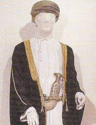

المجتمع العماني في محافظة شمال الباطنة كغيره من المجتمعات له سمات خاصة
وعادات تقليدية لا يزال محافظا عليها من الأزل مثل :

تصف الأزياء الوطنية للرجال والنساء في محافظة شمال الباطنة بالأناقة والبساطة والتنوع من منطقة لأخرى
وان كانت لا تختلف فيما بينها اختلافا كبيرا ، فالرجل العماني يرتدي الثوب الدشداشة )
وهو ثوب طويل من قماش أبيض ناصع في الغالب أو ملون في بعض الأحيان له ربطة صغيرة على العنق ويضع على رأسه المصر( العمامة ) أو (الكمه) الكوفية
ويلبس الرجال الصنادل الجلدية في أقدامهم.
ويعتبر حمل السلاح من بندقية وسيف وخنجر وحمل العصا من العادات والتقاليد التراثية في كل ولاية
الملابس النسائية في شمال الباطنة كثيرة و متنوعة في الطراز والالوان والأقمشة و تستر جميع النساء رؤوسهن بغطاء ما ،
ويلبس بعضهن حجابا أو برقعا على الوجه وفوقه عباءة سوداء من الحرير أو قماش جيد مماثل ،
وتلبس المرآة العمانية ثوبا طويلا بأكمام طويلة يكون فوق السروال الذي يصل للأقدام ،
وتلبس بعضهن غطاء للرأس يسحب وراءهن عند السير وأقمشة ملابس المرآة لها ألوان محببة وهناك كساء أخر تلبسه المرآة فوق ثيابها في أغلب المناطق (الليسو).
وتهتم المرآة في شمال الباطنة بزينتها من الحلي الفضية والذهبية العديدة الأشكال والأنواع
والتي يتناسب كل منها والمناسبات الاجتماعية من أعياد وأفراح أو الحياة اليومية الاعتيادية ومن أهم أشكال مجوهراتها الخواتم والقروط وحلي الرأس والأساور والخلاخل والعقود
والسلاسل وتتألق بعض الخواتم من مجوهرات لكل أصابع اليد بما فيها الإبهام، وخواتم لأصابع الأرجل أيضا
حقوق الموقع محفوظة ©